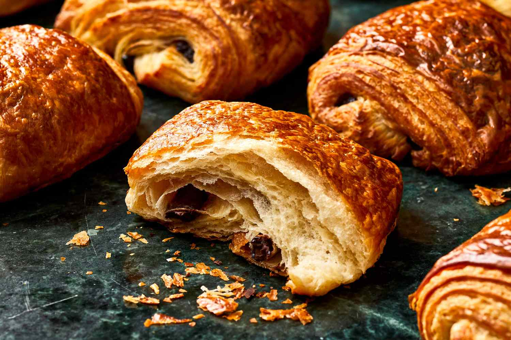
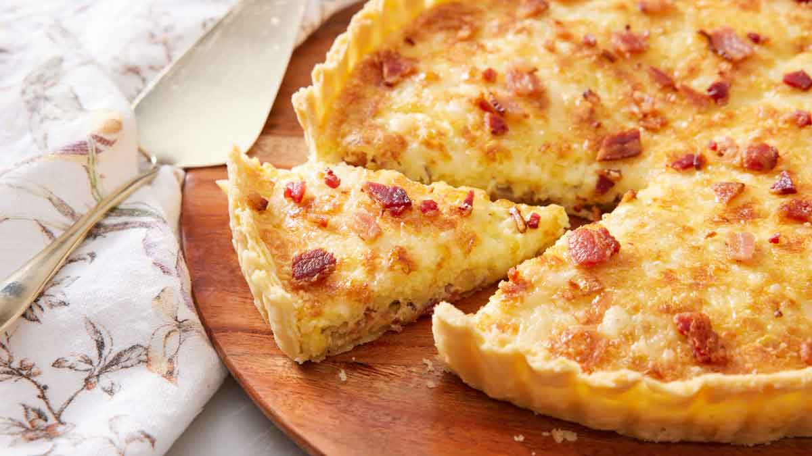

Croissant
Ingredients:
- 2 cups all-purpose flour
- 1/4 cup sugar
- 1 tsp salt
- 1 cup unsalted butter
- 2/3 cup milk
Instructions:
- Prepare dough and fold in butter layers.
- Shape into crescents, proof, and bake until golden brown.
Season: Perfect year-round.

Pain au Chocolat
Ingredients:
- 2 cups all-purpose flour
- 1/4 cup sugar
- 1 tsp salt
- 1 cup unsalted butter
- 100g dark chocolate sticks
Instructions:
- Roll out dough, place chocolate sticks, and fold.
- Proof and bake until golden brown.
Season: Great for winter mornings.

French Toast (Pain Perdu)
Ingredients:
- 4 slices of stale bread
- 2 eggs
- 1/2 cup milk
- 2 tbsp sugar
- Butter for frying
Instructions:
- Whisk eggs, milk, and sugar.
- Dip bread and fry in butter until golden.
Season: Best in spring with fresh fruits.

Quiche Lorraine
Ingredients:
- 1 pie crust
- 4 eggs
- 1 cup heavy cream
- 1 cup grated Gruyère cheese
- 100g bacon bits
Instructions:
- Prebake crust, add bacon and cheese.
- Pour egg-cream mixture and bake until set.
Season: Ideal for fall mornings.
Crepes
Ingredients:
- 1 cup all-purpose flour
- 2 eggs
- 1/2 cup milk
- 1/2 cup water
- 2 tbsp melted butter
Instructions:
- Mix all ingredients into a thin batter.
- Cook in a nonstick pan until lightly browned.
Season: Best enjoyed in summer with fresh berries.
Omelette au Fromage
Ingredients:
- 2 eggs
- 1/4 cup grated cheese
- Salt and pepper to taste
- Butter for frying
Instructions:
- Whisk eggs, season with salt and pepper.
- Cook in butter, add cheese, and fold.
Season: Perfect for year-round breakfasts.